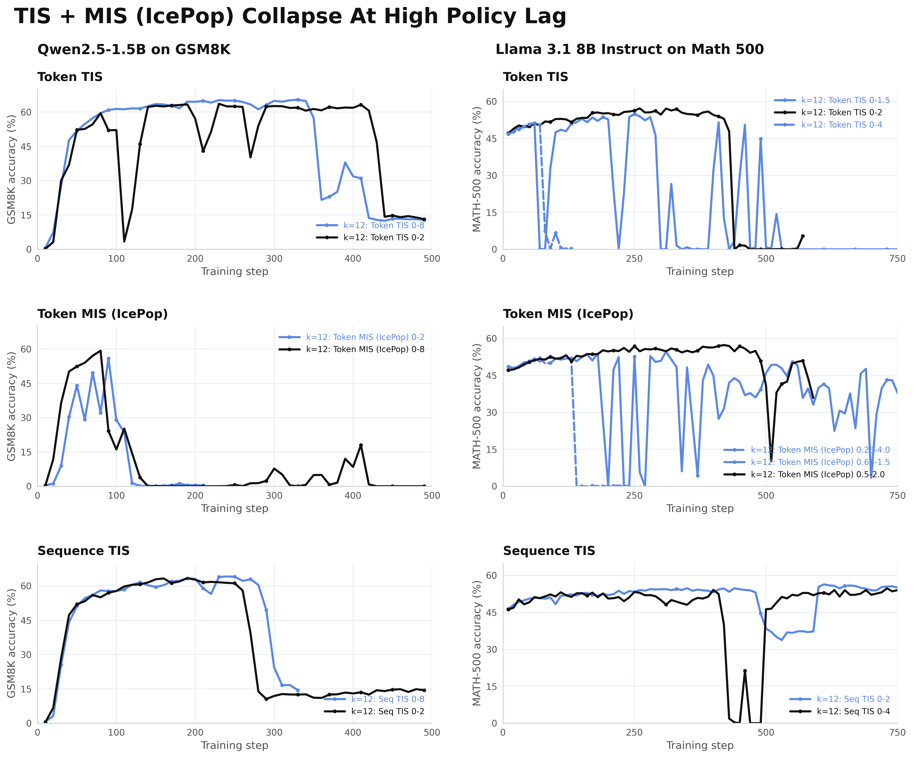
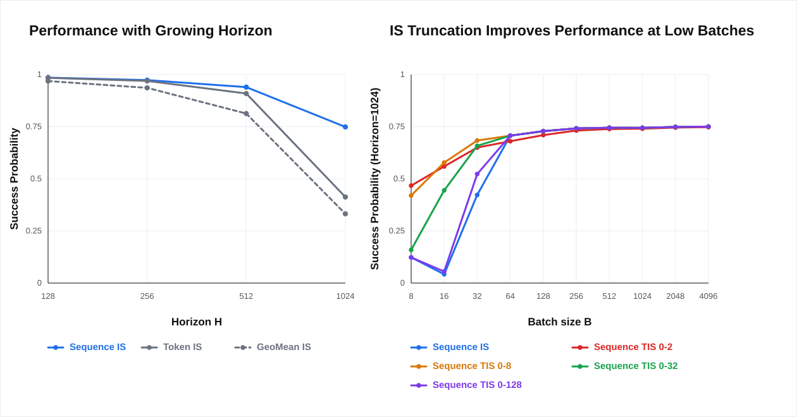
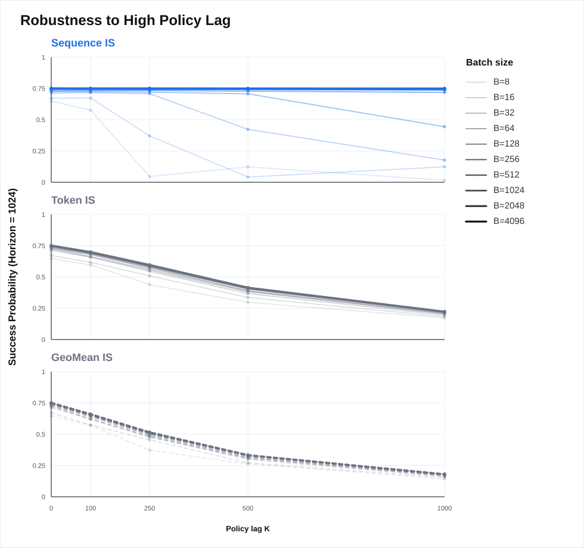

Table of Contents
Async RL has become the default for large-scale RL post-training. Frontier open-weights labs — GLM-5, Ring 1T, DeepSeek V3.2, Minimax M2.5, Qwen 3.5, Intellect-3, Nemotron-3 Super, and Laguna-M.1 — report 2–3× faster throughput over synchronous pipelines, each with its own approach to keeping training stable. This is an attempt to survey that landscape: what does each lab do? What are the shared failure modes? Where do things currently stand?
What is Async RL and Why Use It?
Reinforcement learning has a big systems problem in the age of reasoning: sampling long trajectories is expensive. In standard on-policy RL, you must first generate responses with the current model for your prompts, and only then train on those responses. This makes the loop conceptually simple, but it means a significant amount of GPU time can sit idle while waiting for the last few trajectories to finish.
Asynchronous RL removes this bottleneck by disentangling generation and training into two independent loops. As the diagram below shows, rollout workers keep producing trajectories while the trainer keeps updating the policy, no waiting required:

This decoupling is why many practical RL systems have moved to async pipelines, and why recent open model releases including GLM-5, Ring-1T, Qwen3.5, and Kimi K2.5 already adopt asynchronous RL at scale. The same trend is reflected in open-source infrastructure such as AReaL, LlamaRL, PipelineRL, and Slime.

The catch is that the generated data is now “stale”. The policy used to produce those trajectories is no longer exactly the same as the policy being trained. This means async RL is off-policy.
In principle, we can use importance sampling to correct this mismatch. Formally, the off-policy objective uses importance sampling to reweight each trajectory \(\tau\) by how much more (or less) likely the current policy \(\color{green}{\pi_\theta}\) thinks it is compared to when it was generated by the inference policy \(\color{blue}{\mu}\):
The importance-sampling (IS) ratio is doing the corrective work. But as the policy drifts further from the behavior policy, those ratios can become extreme, and that's where the instability starts to appear.
The Staleness Problem
A useful way to describe Async RL's inherent policy mismatch is with policy lag \(K\): the number of optimization steps by which the training policy is ahead of the inference policy. When \(K=0\), training is fully on-policy. As \(K\) grows, trajectories become more stale and the KL divergence between policy and inference increases.
So how do we prevent this staleness from derailing our runs? The most direct approach is to cap policy lag at some \(K_\text{max}\), either by training on samples in a FIFO queue as they arrive from the inference engine, as in Minimax's windowed FIFO scheduling, or by discarding samples with policy lag \(\geq K_\text{max}\), as in GLM-5's policy-lag cutoff. Both strategies impose an explicit staleness budget on what enters the training loop.
But capping \(K_\text{max}\) can directly reduce the throughput gains from async RL.
There is a useful analogy to the regular roofline model for GPU work; see the JAX-ML scaling book for a thorough discussion. For a matmul \([B,D]\times[D,F]\), arithmetic intensity scales as \(\approx B\) when \(B \ll D,F\). Below the hardware's peak arithmetic intensity, the operation is memory-bound: compute idles waiting for data. Above it, the operation is compute-bound: hardware is fully utilized. In other words, there is a critical batch size \(B^*\) below which you are not fully using your hardware.
Async RL has a similar structure. Define the steady-state policy lag as the policy lag that naturally accumulates when the system runs uncapped:
When \(K_\text{max} < K_\text{steady}\), the trainer periodically exhausts the rollout buffer and stalls. This is the rollout-bound regime, the async RL equivalent of memory-bound. When \(K_\text{max} \geq K_\text{steady}\), the buffer always has samples ready and training never waits. This is the training-bound regime, where you get the fastest step times. Thus, as \(K_\text{max}\to\infty\), Async RL reaches its theoretical throughput ceiling: the speed you would get if you imposed no staleness constraint at all.
However, long-horizon tasks, exactly where async RL's throughput advantage matters most, push \(K_\text{steady}\) up. Rollout latency scales with sequence length, so longer sequences mean higher natural policy lag. Look at what happens as sequence length grows:

At short sequences, even \(K=4\) gets you close to the full async speedup. But as sequences get longer with harder reasoning tasks, more tool use, and longer-context problems, \(K=4\) async achieves less and less of the full \(K=\infty\) speedup. This means longer and longer-horizon tasks create more pressure to push policy lag \(K\) up.
How Do We Stabilize Asynchronous RL?
The systems speedups from Async RL do not come for free. As policy lag grows, training can often become unstable and crash.

So how do we avoid collapse? For Async RL, there are two separate sources of instability, and they need different fixes. The first is off-policy bias: policy lag pushes IS ratios into extremes, making gradient estimates noisy. The second is a numerical mismatch between the rollout and training engines that appears heavily at frontier-scale training.
Algorithmic Controls: Taming the IS Ratios
To stabilize asynchronous RL at scale, frontier open-weight labs have designed algorithmic controls for importance-sampling ratios, including GLM-5, Ring-1T, DeepSeek V3.2, Minimax M2.5, Intellect-3, Nemotron-3 Super, and Laguna-M.1.
| Method | Description | Used In | Biased? |
|---|---|---|---|
| Truncated Importance Sampling (TIS) / CISPO | Clips outlier importance ratios \(r\) into \([r_\text{low}, r_\text{high}]\), where \(r\) can be a token ratio, sequence ratio, or geometric-mean sequence ratio. | AReaL, LlamaRL / AIPO, Minimax M2.5, Laguna-M.1 | Yes |
| IcePop / Masked Importance Sampling (MIS) | Set outlier ratios to zero outside the valid window. The ratio can be token-level, sequence-level, or geometric-mean. | GLM-5, Ring-1T, Intellect-3, Nemotron-3 Super | Yes |
| DeepSeek Masking | Mask negative-advantage trajectories when their average log-ratio exceeds a threshold. | DeepSeek-V3.2 | Yes |
| M2PO | Iteratively mask tokens until the average squared log-ratio is below a threshold. | M2PO | Yes |
These methods all involve reshaping the importance-sampling (IS) weights, reducing variance at the cost of introducing bias. So what is wrong with the IS weights as is? We can already see the fundamental issue in the structure of the unbiased off-policy objective in Eq. (1):
This unbiased policy objective uses the sequence-level importance ratio \(w(\tau)\), which can be written as the product of token-level ratios \(\rho(\tau,i)\):
The variance of the sequence-level importance ratio can compound with the number of tokens, which can be catastrophic in long-horizon RL. To avoid this curse of the horizon, PPO and GRPO use token-level ratios \(\rho(\tau,i)\), while GSPO and GMPO use the geometric mean \(\sqrt[|\tau|]{\prod_i \rho(\tau,i)}\), which strikes a balance between the token and sequence levels.
Still, token-level or geometric ratios do not fully prevent outlier importance weights. This is where masking and clipping enter.
Clipping caps how extreme the token or sequence ratio is allowed to become. For example, truncated importance sampling replaces \(r\) with:
This is equivalent to Minimax's CISPO formulation. The ScaleRL paper recently found this kind of truncation effective for async RL. Since these importance weights are detached, the gradient does not vanish when the importance ratio is clipped.
Masking is more aggressive: it drops samples entirely based on the token, sequence, or geometric-mean ratio.
This is similar to the original PPO and GRPO clipping formulation, where the gradient signal is masked for samples outside the clipping range.
Systems-Level Methods to Defeat Train-Inference Mismatch
Policy lag from Async RL is only one source of training-inference mismatch. A second, separate class of mismatch comes from the fact that the rollout engine and the training engine are fundamentally different systems: different parallelism strategies, different kernel implementations, and different MoE routing behavior. These differences amplify the existing distributional train-inference gaps from policy lag.
MoE routing replay. Rollout Routing Replay (R3) observes that identical weights can still cause roughly 10% of MoE routing decisions to diverge per forward pass, causing collapse. The fix is to record inference routing masks and replay them during training. GSPO first mentioned this issue, but targeted the instability from the algorithm side via geometric-mean IS.
Token-in, token-out. Prime Intellect's renderers are a good example of TITO: the inference server handles only tokens, while all templating and masking live in client code. Without this, tokenization discrepancies silently corrupt log-probability computation between rollout and trainer.
Batch-invariant kernels. Thinking Machines points out that batching changes floating-point reduction order, making log-probs nondeterministic across batch sizes. TBIK extends this fix to tensor-parallel sizes, for example when training runs TP=1 and rollout runs TP>1.
FP32 LM head. Minimax M1 identified that bf16 rounding at the LM head distorts IS ratios, so it uses fp32 LM-head computation instead. ScaleRL confirmed that this dramatically improves asymptotic performance. It is a one-line fix.
FP16. Qi et al. show that switching the full pipeline to FP16 eliminates train-inference mismatch with only a few lines of code. This seems to be a particular issue on Ampere GPUs, and it is unclear whether it has been validated at frontier RL scale.
Quantized rollouts. FlashRL does INT8/FP8 rollouts with accurate log-probs and no accuracy drop on Qwen2.5-32B when combined with truncated IS. More recently, open-source libraries have also pushed for this, with Slime adding int4 rollout quantization for long-horizon agentic tasks where generation latency dominates.
Efficient weight sync. PipelineRL introduces in-flight weight syncs, broadcasting weights after each optimizer step without halting generation and keeping policy lag near zero. Magistral, AReaL, prime-rl, and NeMo-RL all adopt variants of this. Composer 2.5 introduces delta-compression updates, which accelerate cross-cluster weight sync by updating only a portion of weights.
KV cache recomputation. Interestingly, KV-cache recomputation does not seem to affect stability much. Magistral and Nemotron 3 Super both tested recomputing KV caches after weight syncs and found no benefit.
So Why Does Async RL Still Collapse?
System fixes do get you further, with carefully chosen precisions, deterministic kernels, and routing replay. But none of them address policy lag itself. Even a perfectly aligned rollout engine still produces stale trajectories, and at high \(K\), the distribution of IS ratios becomes extreme.
That is why algorithmic changes that allow stable training despite policy lag are fundamental. The masking and clipping methods proposed so far are robust at low policy lag, where async RL gives moderate speedups with stable training. But push policy lag higher and the picture changes. We swept \(K=12\) policy-lag Async RL training across token TIS, sequence TIS, and token MIS (IcePop) on Qwen2.5-1.5B on GSM8K and Llama 3.1 8B Instruct on MATH-500.

The common clipping and masking strategies can delay instability, but none are robust in this high policy-lag regime. Some variants crash outright. Others survive longer depending on thresholds, model, and task. Sequence-level TIS holds up better than token-level variants, but even it eventually degrades.
Clipping and masking delay the collapse. They do not prevent it. Every method eventually collapses, and how long a run survives depends heavily on threshold tuning regardless of method. The instability is structural, and the asymmetry between token and sequence estimators is the first hint at why.
Does Scaling Async RL Hit the Bias or Variance Wall?
So why does this happen? The clue from the previous section, that sequence IS held up better than token-level variants under high policy lag, has a deeper reason.
The original PPO and GRPO papers proposed token-level IS in the on-policy RL setting. When consecutive policies stay close, the per-token ratio \(\rho(\tau,i)\) stays near 1, and its product, the sequence-level ratio \(w(\tau)=\prod_i\rho(\tau,i)\), is well-behaved. In async RL, the stale rollout policy means that in long-horizon tasks, the mismatch can become extreme for previous states. This state-occupancy mismatch is exactly what token-level IS misses and what sequence-level IS corrects at the trajectory level.
Of course, sequence IS's unbiasedness comes with extra variance. At small batch sizes, the sequence-level ratio is noisy, which is why token IS can look competitive at low compute.
Simple Horizon Simulation
To isolate how a long-horizon, sparse-reward setting scales with asynchronous RL, we consider a simple MDP: a policy chooses a sequence of bits over horizon \(H\), succeeding if fraction \(f\) of bits are 1. The behavior policy is constrained to lag \(K\) behind the training policy, faithfully representing the async RL setup.

As horizon \(H\) grows, token IS and geometric-mean IS both fall sharply while sequence IS degrades more robustly. Interestingly, geometric-mean IS tracks closer to token IS than to sequence IS at long horizons, ruling it out as a reliable middle ground. This is what the theory predicts: the bias of token IS hurts it when policy lag and horizon grow.
The right panel demonstrates the necessity of truncation at low batch sizes. At small \(B\), regular sequence IS performs worst because high variance dominates. Truncated sequence TIS performs more robustly at these low batches, clipping the most extreme ratios to trade a small amount of bias for much lower variance. But by \(B\geq128\), regular sequence IS begins outperforming all truncated variants.

Below a critical batch size, variance dominates and high-bias methods are competitive. Past it, the bias in token IS becomes the ceiling. At large batch sizes, sequence IS is extremely robust to high policy lag, with performance matching fully synchronous training. On the other hand, token IS and geometric-mean IS both degrade monotonically with \(K\), regardless of \(B\).
In other words, sequence IS scales well with compute, while token or geometric-mean IS cannot be rescued. As greater compute is poured into RL, token IS is not approximately biased in the async RL regime; it is structurally inconsistent as compute scales.
Open Questions at a Messy Frontier
As suggested by our simulation results, as we scale batch size, the advantage of sequence IS compounds. At \(B=32\), sequence TIS collapses even before token TIS does. By \(B=64\), it matches the synchronous \(K=0\) baseline, and at \(B=128\), it surpasses it. Token TIS continues to collapse, however, as more compute is not able to mitigate its estimator bias.
We think this reflects a more general pattern: the low-bias compute scaling hypothesis.
Low-bias methods are often less efficient at low compute because they expose more variance, but they preserve the correct objective and therefore have more room to improve as compute, batch size, and variance control scale. High-bias methods are often more efficient at small scale, but their bias can become the bottleneck at high compute.
If this hypothesis is right, the problem compounds as tasks grow longer-horizon: the critical batch where sequence IS is no longer variance-dominated rises with horizon length. Existing clipping and masking methods buy stability by corrupting the estimator, which is exactly the property that limits them as compute scales.
So the real question is: How do we know, during training, when the gradient estimate has degraded enough to cause collapse, and what do we do about it?
This is only one read of the Async RL landscape, and there are a lot of open questions:
- How do we stabilize sequence IS at low and moderate batch sizes without reintroducing bias? The TIS variants help, but they are still patching a variance problem rather than solving it.
- Is scaling batch size the right lever for variance control, or are there cheaper ways to reduce gradient noise that do not require more compute?
- Are there architectural changes that mitigate train-inference bias and allow policy lag to be pushed higher? For example, MoE models suffer particularly because of expert routing.
We suspect the instability has a more specific cause than just “high variance”: something observable in the gradient statistics before the crash happens. For more, see Part 2, which discusses the underlying cause and one potential solution.
Appendix
Further IS Reshaping Ablations
Additional Qwen2.5-1.5B masking ablations on GSM8K under high policy lag. Sequence-level MIS and geometric-mean MIS / DeepSeek-style masking are sensitive to threshold choices and can become unstable.